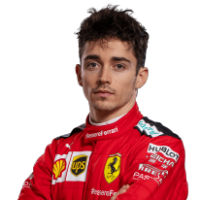
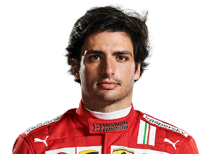
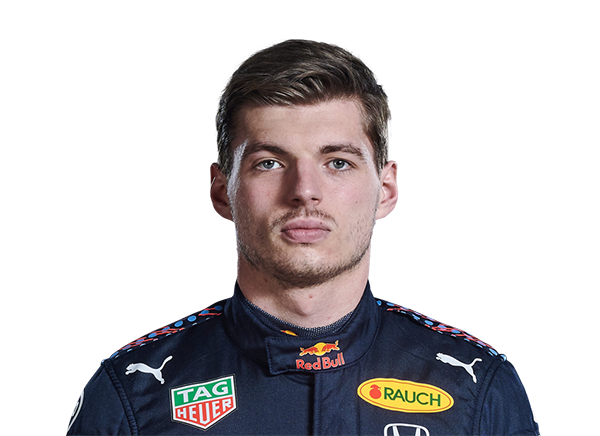
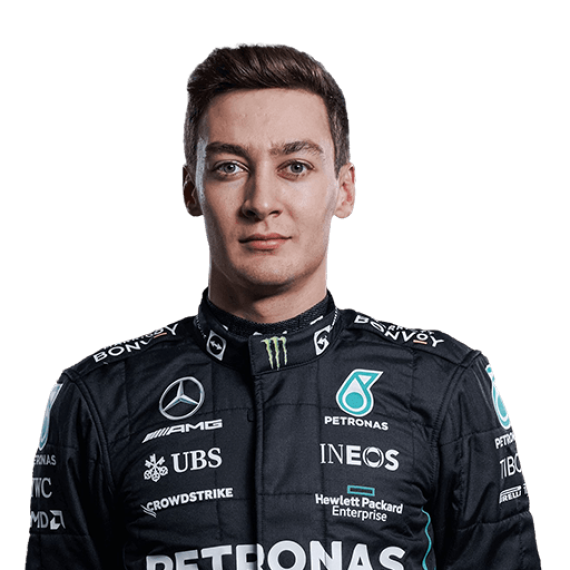
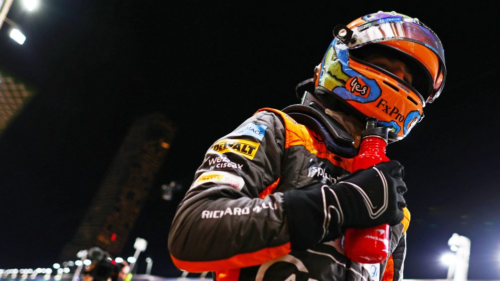
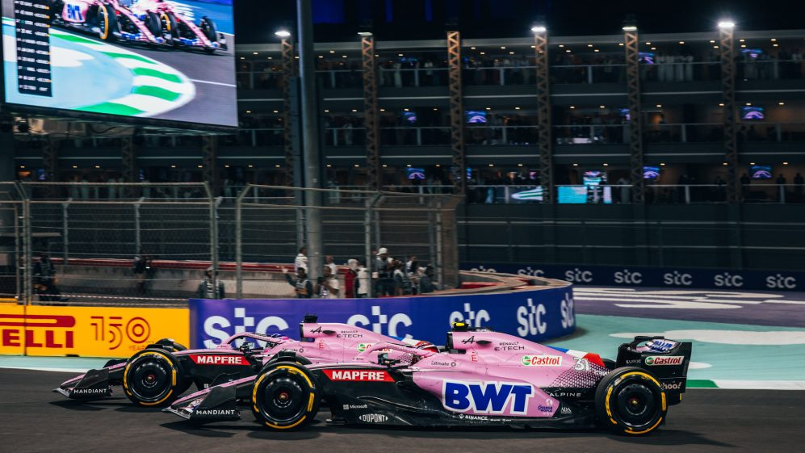
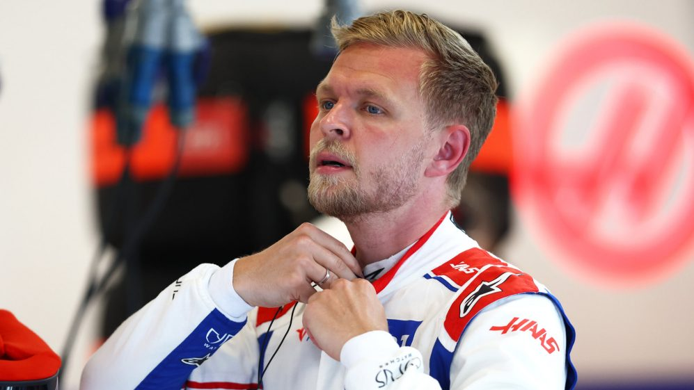
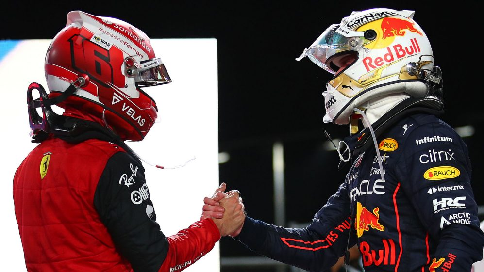

Próximo Gran Premio en:
Mundial de pilotos

1. Charles Leclerc - Ferrari
Charles Leclerc ocupa el primer lugar en el mundial de pilotos después de ganar la primera carrera en Bahrein y quedar en segundo lugar en Arabia Saudi.

2. Carlos Sainz - Ferrari
Carlos Sainz ocupa la segunda posición en el mundial de pilotos después de quedar en segunda posición en Bahrein y en tercer lugar en Arabia Saudi.

3. Max Verstappen - RedBull
El campeón del mundo, Max Verstappen ocupa el tercer lugar en el mundial de pilotos después de abandonar en Bahrein y ganar la carrera en Arabia Saudi.

4. George Russel - Mercedes
George Russel en su primera temporada en Mercedes ocupa la cuarta posición después de quedar cuarto en Bahrein y acabar quinto en Arabia Saudi.
Mejores momentos de la pasada temporada
Últimas noticias
News
Horner dice que se siente "genial recuperarse" con la victoria de Arabia Saudita, pero Pérez "desesperadamente desafortunado".

News
Ricciardo satisfecho con el ritmo de McLaren antes de la carrera de casa, a pesar de DNF en Jeddah.

News
Los pilotos de alpine abandonan Arabia Saudita con fortunas contrastantes después de una "intensa" batalla rueda a rueda.
News
Bottas, Alonso y Ricciardo se retiran con una vuelta de diferencia en Jeddah.

News
Magnussen dice que Haas fue 'fenomenal' después de tomar P9 en Jeddah, pero admite que la fuerza del cuello estaba 'en ninguna parte'.

News
Leclerc dice que "todas las carreras deberían ser así" a pesar de perder el impresionante GP de Arabia Saudita ante Verstappen.
Próximo Gran Premio
El próximo gran premio se celebra en Melboune, Australia. La Fórmuala 1 visita Australia después de tres años debido a la pandèmia. El circuito fué remodelado el año pasado para que los nuevos coches de este año puedan tener más puntos de adelantamiento.